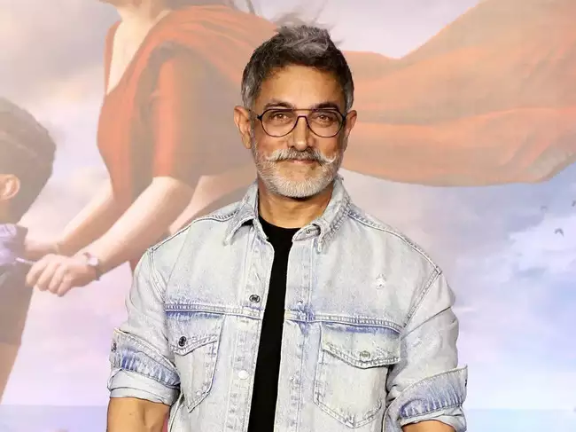

Residence
Amir Khan resides in Bandra, Mumbai, at the prestigious Galaxy Apartments. Furthermore, he owns a 150-acre estate in Panvel, which includes three cottages, a gym, and a swimming pool.
Family
Amir Khan, born on December 27, 1965, is the eldest child of Salim Khan, a renowned screenwriter, and his first wife, Sushila Charak, who later adopted the name Salma. Amir was raised in both Hindu and Muslim traditions.
Schooling
Amir Khan and his younger siblings, Arbaaz and Sohail, completed their education at St. Stanislaus High School in Bandra, Mumbai. He and his younger brother Arbaaz also attended The Scindia School in Gwalior for a few years. Amir initially enrolled in but later left Mumbai's St. Xavier's College.
Career
In 1988, Amir Khan made his screen debut in a supporting role in the movie "Biwi Ho To Aisi." His breakthrough came with "Maine Pyar Kiya" (1989), a beloved family drama directed by Sooraj R. Barjatya, in which he played the leading role. The film became one of the highest-grossing Indian films of that era. He received his first nomination for Best Actor at the Filmfare Awards. "Maine Pyar Kiya" was released under various titles, including "Prema Paavuraalu" in Telugu, "Te Amo" in Spanish, and "When Love Calls" in English.
Bodybuilding
Amir Khan's younger siblings, Arbaaz and Sohail, also share a passion for bodybuilding.
Donation
Amir Khan is known for his philanthropy, as he generously donates 90% of his income from films to NGOs working for cancer patients.
"Lagaan: Once Upon a Time in India" is one of the most successful movies in Amir Khan's career.
"Mangal Pandey: The Rising" is considered one of the less successful movies in Amir Khan's career.
Amir Khan is currently preparing for his international debut in Hollywood and has exciting upcoming projects in the pipeline.
Amir Khan is still single, and there have been various controversies surrounding his rumored relationships with different actresses.
Amir Khan has made significant contributions to charitable causes, including the establishment of a cancer hospital that provides free treatment to those in need.